聚类算法简介
学习目标：
1.知道什么是聚类
2.了解聚类算法的应用场景
3.知道聚类算法的分类
【知道】聚类算法介绍
一种典型的无监督学习算法，主要用于将相似的样本自动归到一个类别中。
在聚类算法中根据样本之间的相似性，将样本划分到不同的类别中，对于不同的相似度计算方法，会得到不同的聚类结果，常用的相似度计算方法有欧式距离法。
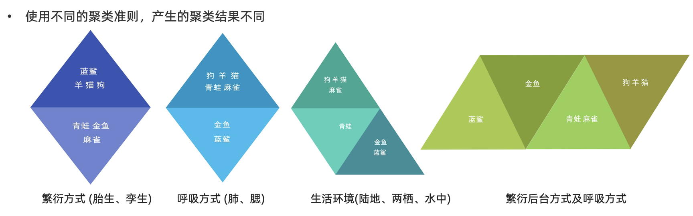
【了解】聚类算法在现实中的应用
- 用户画像，广告推荐，Data Segmentation，搜索引擎的流量推荐，恶意流量识别
- 基于位置信息的商业推送，新闻聚类，筛选排序
- 图像分割，降维，识别；离群点检测；信用卡异常消费；发掘相同功能的基因片段
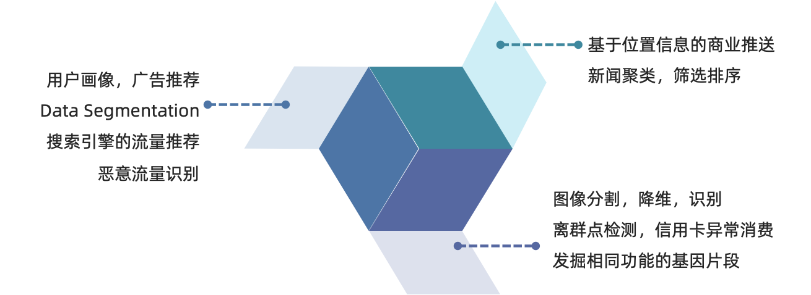
【知道】分类
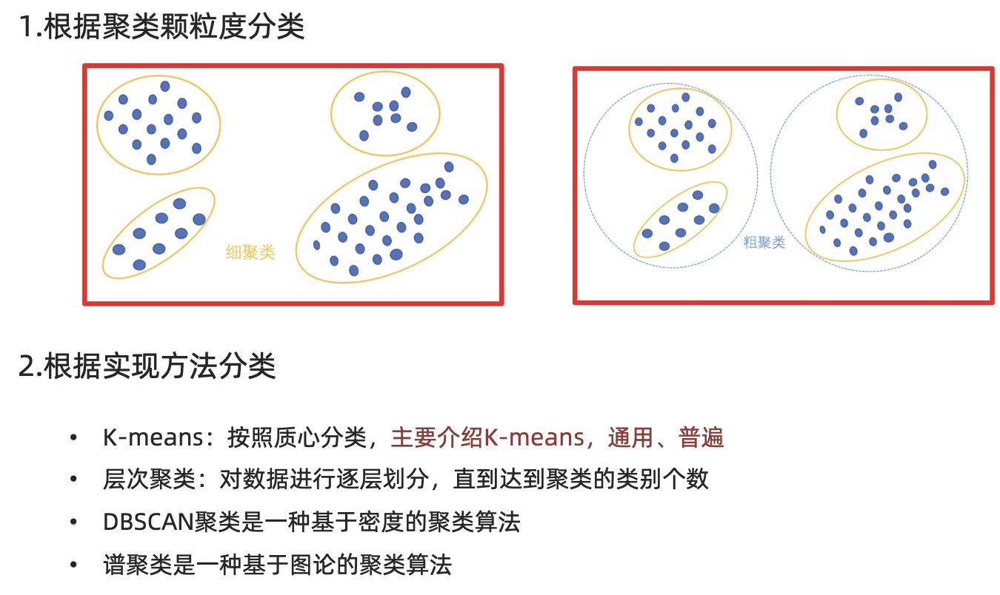
聚类API的初步使用
学习目标：
1.了解Kmeans算法的API
2.动手实践Kmeans算法
【了解】api介绍
- sklearn.cluster.KMeans(n_clusters=8)
- 参数:
- n_clusters:开始的聚类中心数量
- 整型，缺省值=8，生成的聚类数，即产生的质心（centroids）数。
- 方法:
- estimator.fit(x)
- estimator.predict(x)
- estimator.fit_predict(x)
- 计算聚类中心并预测每个样本属于哪个类别,相当于先调用fit(x),然后再调用predict(x)
【实践】 案例
随机创建不同二维数据集作为训练集，并结合k-means算法将其聚类，你可以尝试分别聚类不同数量的簇，并观察聚类效果：
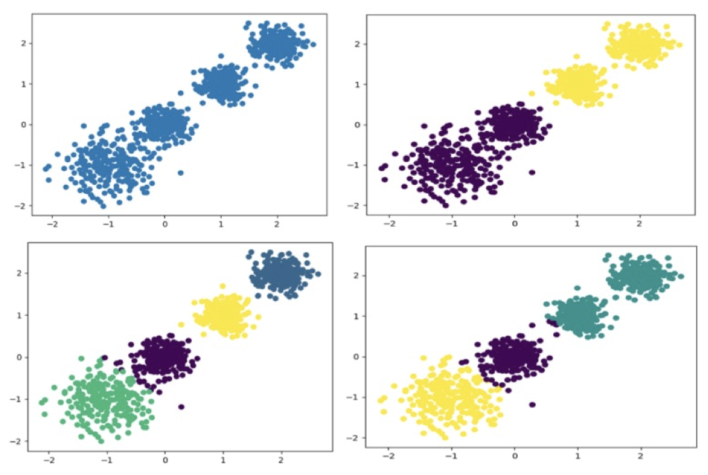
1.创建数据集
import matplotlib.pyplot as plt from sklearn.datasets import make_blobs X, y_true = make_blobs( n_samples=1000, centers=[[-1, -1], [0, 0], [1, 1], [2, 2]], cluster_std=[0.4, 0.2, 0.2, 0.2], random_state=9, ) plt.scatter(X[:, 0], X[:, 1], s=8) plt.title("Generated samples") plt.show()
2.使用k-means进行聚类,并使用CH方法评估
import matplotlib.pyplot as plt from sklearn.cluster import KMeans from sklearn.metrics import calinski_harabasz_score model = KMeans(n_clusters=4, n_init="auto", random_state=42) labels = model.fit_predict(X) print("CH 指标：", calinski_harabasz_score(X, labels)) plt.scatter(X[:, 0], X[:, 1], c=labels, s=8, cmap="viridis") plt.scatter( model.cluster_centers_[:, 0], model.cluster_centers_[:, 1], c="red", marker="x", s=120, label="centers", ) plt.legend() plt.show()
Kmeans算法流程
学习目标
1、理解Kmeans算法的执行过程
【掌握】k-means聚类流程
1、随机设置K个特征空间内的点作为初始的聚类中心
2、对于其他每个点计算到K个中心的距离，未知的点选择最近的一个聚类中心点作为标记类别
3、接着对着标记的聚类中心之后，重新计算出每个聚类的新中心点（平均值）
4、如果计算得出的新中心点与原中心点一样（质心不再移动），那么结束，否则重新进行第二步过程
通过下图解释实现流程：
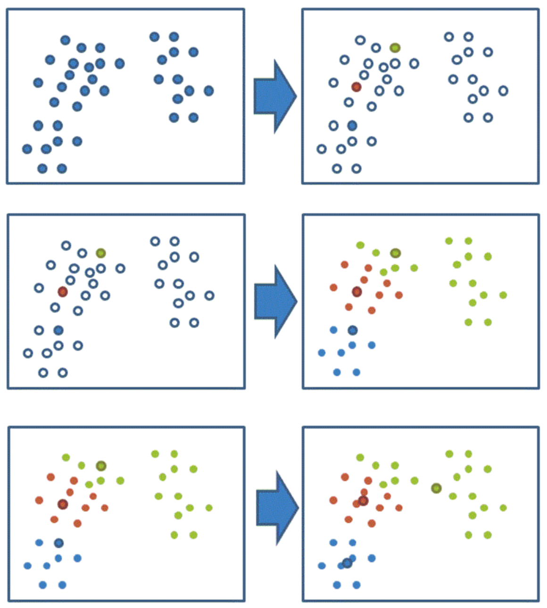
k-means聚类动态效果图：
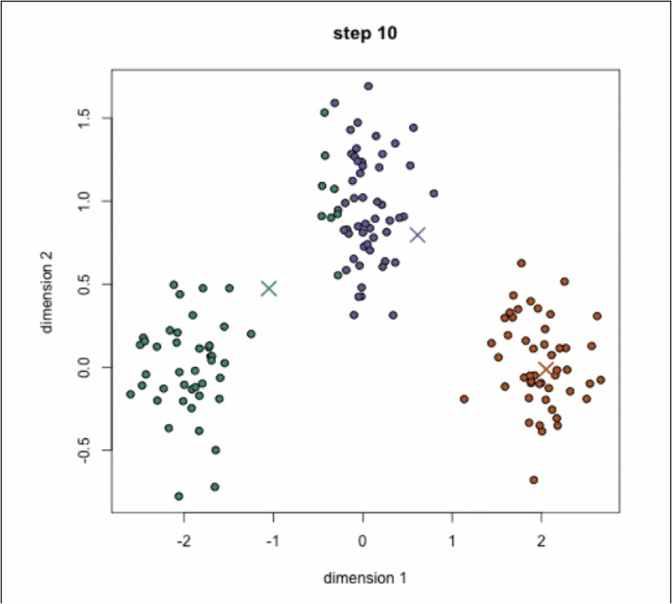
【练习】案例练习
- 案例：
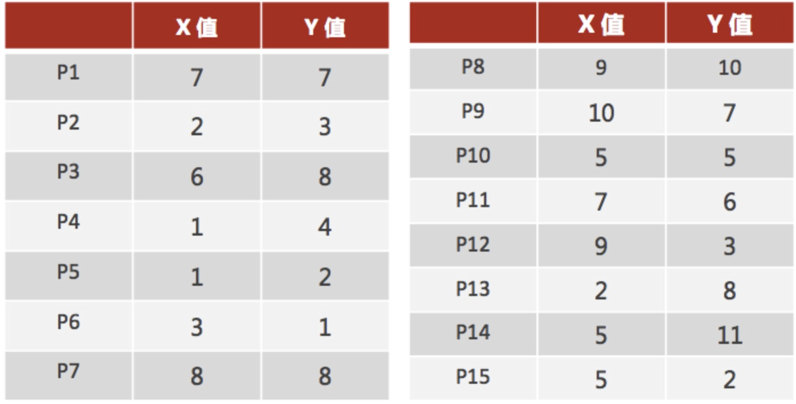
1、随机设置K个特征空间内的点作为初始的聚类中心（本案例中设置p1和p2）
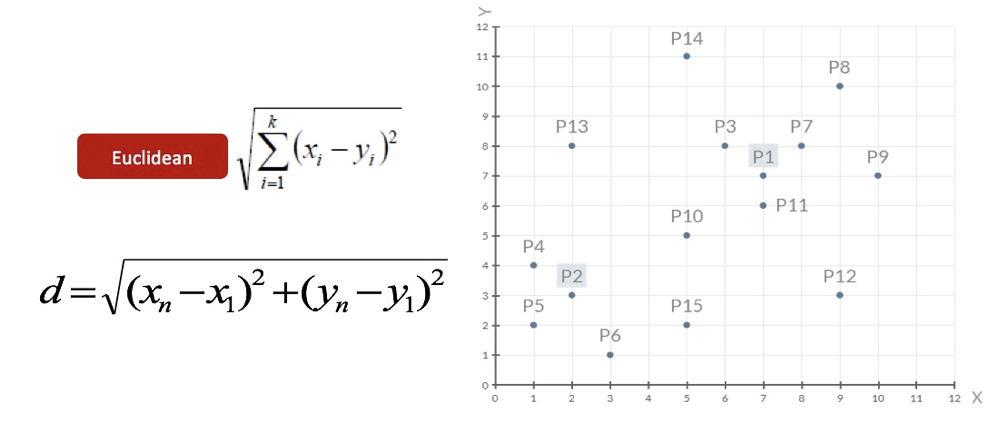
2、对于其他每个点计算到K个中心的距离，未知的点选择最近的一个聚类中心点作为标记类别
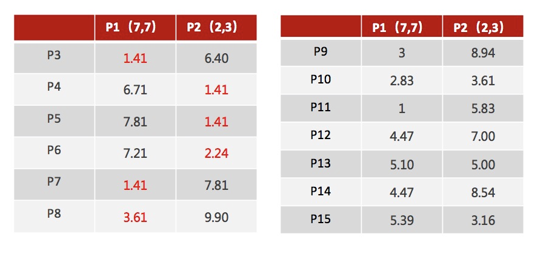
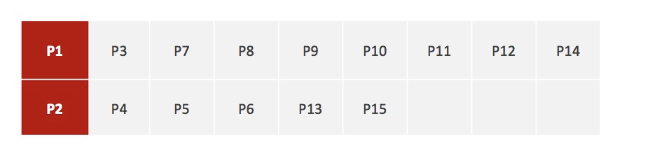
3、接着对着标记的聚类中心之后，重新计算出每个聚类的新中心点（平均值）
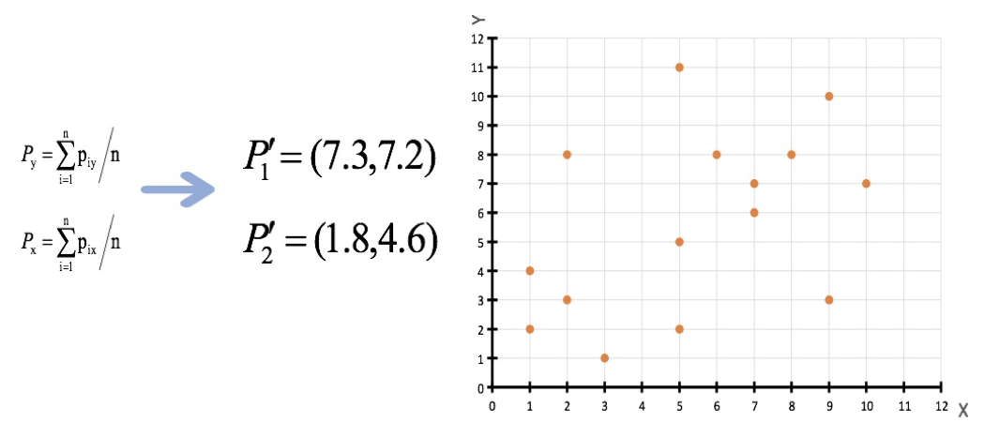
注意：这里P2′=(2.3,3.3)，下同。
4、如果计算得出的新中心点与原中心点一样（质心不再移动），那么结束，否则重新进行第二步过程【经过判断，需要重复上述步骤，开始新一轮迭代】
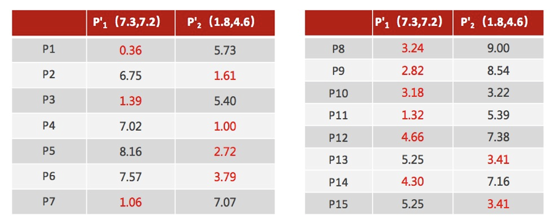
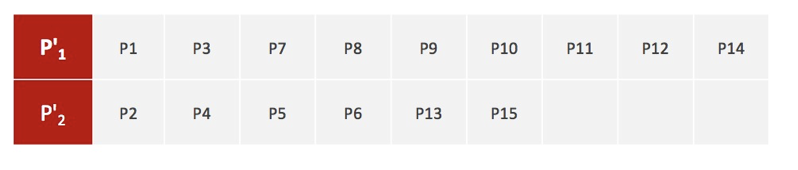
5、当每次迭代结果不变时，认为算法收敛，聚类完成，K-Means一定会停下，不可能陷入一直选质心的过程。
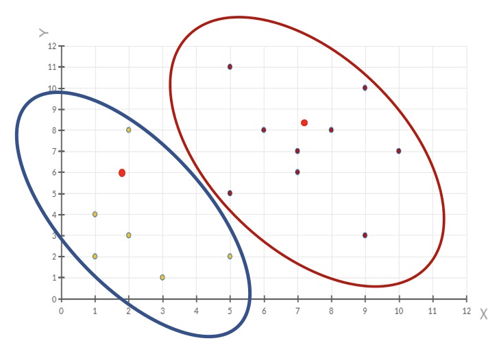
评价指标
学习目标:
- 了解 SSE 聚类评估指标
- 了解 SC 聚类评估指标
- 了解 CH 聚类评估指标
- 了解肘方法的作用
【了解】 SSE-误差平方和
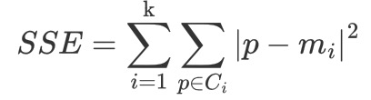
-
K 表示聚类中心的个数
-
Ci 表示簇
-
p 表示样本
-
mi 表示簇的质心
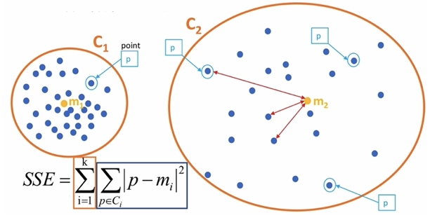
SSE 越小，表示数据点越接近它们的中心，聚类效果越好。
【了解】SC 系数
结合了聚类的凝聚度（Cohesion）和分离度（Separation），用于评估聚类的效果。
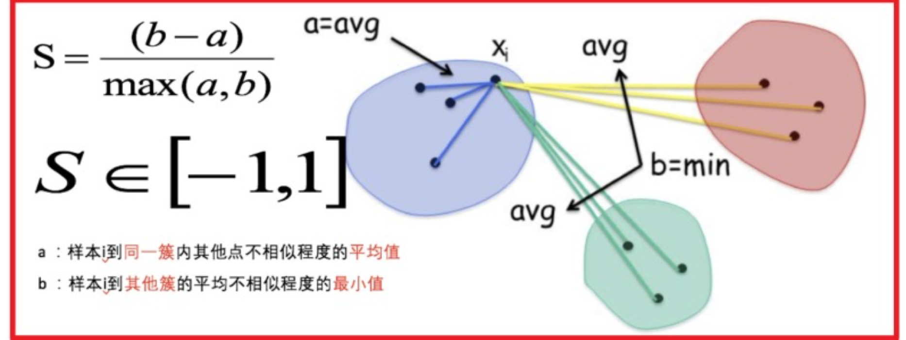
其计算过程如下：
- 计算每一个样本 i 到同簇内其他样本的平均距离 ai，该值越小，说明簇内的相似程度越大
- 计算每一个样本 i 到最近簇 j 内的所有样本的平均距离 bij，该值越大，说明该样本越不属于其他簇 j
- 计算所有样本的平均轮廓系数
- 轮廓系数的范围为：[-1, 1]，值越大聚类效果越好
【了解】肘部法
肘部法可以用来确定 K 值.
-
对于n个点的数据集，迭代计算 k from 1 to n，每次聚类完成后计算 SSE
-
SSE 是会逐渐变小的，因为每个点都是它所在的簇中心本身。
-
SSE 变化过程中会出现一个拐点，下降率突然变缓时即认为是最佳 n_clusters 值。
-
在决定什么时候停止训练时，肘形判据同样有效，数据通常有更多的噪音，在增加分类无法带来更多回报时，我们停止增加类别。
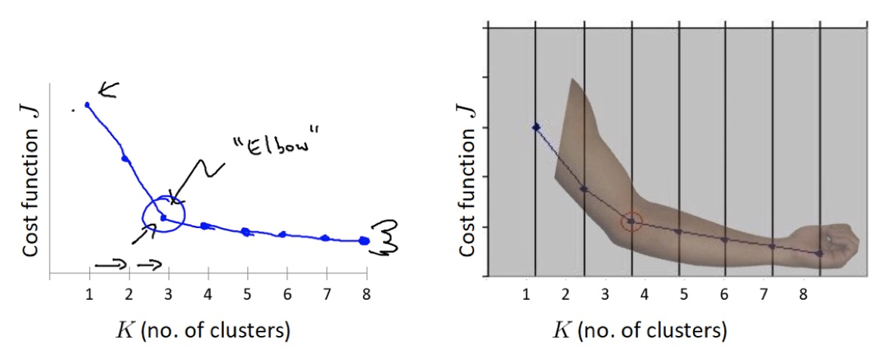
【了解】CH 系数
CH 系数结合了聚类的凝聚度（Cohesion）和分离度（Separation）、质心的个数，希望用最少的簇进行聚类。
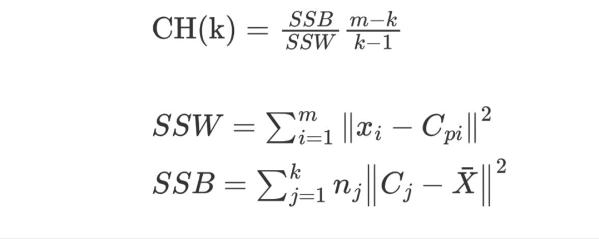
SSW 的含义：
- Cpi 表示质心
- xi 表示某个样本
- SSW 值是计算每个样本点到质心的距离，并累加起来
- SSW 表示表示簇内的内聚程度，越小越好
- m 表示样本数量
- k 表示质心个数
SSB 的含义：
- Cj 表示质心，X 表示质心与质心之间的中心点，nj 表示样本的个数
- SSB 表示簇与簇之间的分离度，SSB 越大越好
【实践】聚类评估的使用
import pandas as pd from sklearn.cluster import KMeans from sklearn.datasets import make_blobs from sklearn.metrics import calinski_harabasz_score, silhouette_score X, _ = make_blobs(n_samples=800, centers=4, cluster_std=0.45, random_state=42) rows = [] for k in range(2, 9): model = KMeans(n_clusters=k, n_init="auto", random_state=42) labels = model.fit_predict(X) rows.append({ "k": k, "SSE": model.inertia_, "silhouette": silhouette_score(X, labels), "CH": calinski_harabasz_score(X, labels), }) scores = pd.DataFrame(rows).set_index("k") print(scores.round(3)) scores.plot(subplots=True, figsize=(8, 8), title="聚类评估指标")
【实践】案例
【了解】案例介绍
已知：客户性别、年龄、年收入、消费指数
需求：对客户进行分析，找到业务突破口，寻找黄金客户
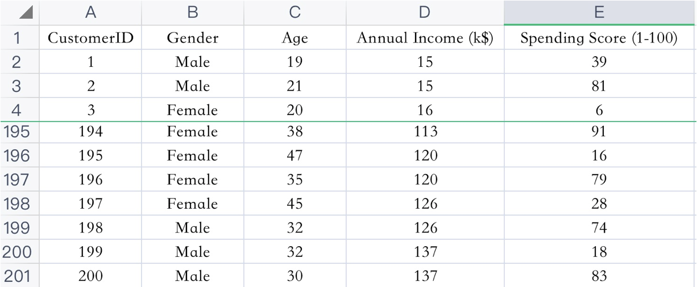
数据集共包含顾客的数据, 数据共有 4 个特征, 数据共有 200 条。接下来，使用聚类算法对具有相似特征的的顾客进行聚类，并可视化聚类结果。
【实践】案例实现
import matplotlib.pyplot as plt import pandas as pd from sklearn.cluster import KMeans from sklearn.preprocessing import StandardScaler df = pd.read_csv("data/customers.csv") features = ["Annual Income (k$)", "Spending Score (1-100)"] X = df[features] scaler = StandardScaler() X_scaled = scaler.fit_transform(X) model = KMeans(n_clusters=5, n_init="auto", random_state=42) df["cluster"] = model.fit_predict(X_scaled) centers = scaler.inverse_transform(model.cluster_centers_) plt.scatter(X.iloc[:, 0], X.iloc[:, 1], c=df["cluster"], cmap="viridis") plt.scatter(centers[:, 0], centers[:, 1], c="red", marker="x", s=160) plt.xlabel(features[0]) plt.ylabel(features[1]) plt.title("Customer segments") plt.show() print(df.groupby("cluster")[features].mean().round(1))
作业
1.使用思维导图总结聚类算法部分的内容
2.动手实现课程中的代码